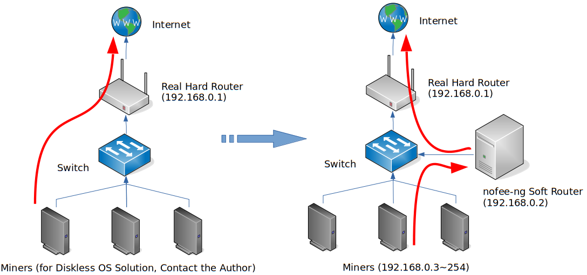

nofee-ng: The Next Generation NoDevFee Mining Software for Cryptocurrency
The first edition you can find on this planet that has the feature of anti-DevFee in a central mode for both GPU miners and hardware miners (FPGA, ASIC, etc).
nofee-ng is a generic solution for NoDevFee mining. It can get stolen cryptocurrency refunded back from mining software (which is known as DevFee and is about 0.5~2% of your total mining shares) for many kinds, such as ETH, ETC, XMR, ZCash, etc, by refunding DevFee to ANOTHER wallet address which can be different from the main mining address.
This is the Next Generation of NoDevFee program. It works as a "soft router" rather than the first generation which works on a single same machine together with the mining software. So, nofee-ng works for Windows， Linux and hardware miner although itself must be run in Linux.
nofee-ng is perfect for mining farms for easy management. If you're a mining farm operator, you can also redirect the DevFee to your own wallet without the knowledge of your tenants! Remember: you are NOT stealing from your clients because DevFee belonged to the mining software author.
The refunded DevFee will show up in a mining pool in about 1~2 hours. Please be patient!
The refunded pool may be a different mining pool than your main pool since mining software may use another pool for DevFee. Please check the README.md in different implementation folders.
The mechanism of nofee-ng is depicted in the following paradigm: The original network traffic, e.g. mining work submission, goes from miners directly to the pool. But now the traffic is redirected to the nofee-ng soft router who will change the DevFee wallet to your own wallet address.
Usage
- Set up a Linux machine which runs
nofee-ngas a soft router. Install iptables and iproute (on some distros it's called iproute2).nofee-ngis tested on Debian 9 (Stretch) and CentOS 8, but should work on other Linux distros. The gateway of this soft router should point to the real hard router, say 192.168.0.1 in the previous diagram. - Download the
nofee-ngbundle from the corresponding folder for your cryptocurrency and extract it to/opt/nofee-ng. - Change the wallet address to your refunded DevFee address in
nofee.txt. - Login as root or use sudo to execute the following commands on the Linux soft router:
systemctl stop firewalld(Skip this if you are not running a firewall)systemctl disable firewalld(Skip this if you are not running a firewall)- Disable SELinux: Change the line containing
SELINUX=in file/etc/selinux/configtoSELINUX=disabled. And reboot thenofee-ngsoft router (Skip this if you are not using SELinux) ln -s /opt/nofee-ng/nofee.service /etc/systemd/system/systemctl enable nofeesystemctl start nofee- Now use
systemctl status nofeeto check whether you can see something likeActive: active (running)in the heading lines,Found NoFee WalletandRunningin the tailing lines. If so, congratulations,nofee-ngis configured properly and running. It will be auto started by systemd on next reboot. Otherwise check the error message and Google it or leave me a message. - Change the default gateway for all your miners to let them point to the nofee-ng soft router, say 192.168.0.2 in the next paradigm. You can do this on the DHCP server, e.g. the real hard router. Don't be afraid that traffic other than stratum will not work,
nofee-ngwon't touch them. - Now let your miners work as usual. After about 1~2 hours, the refunded DevFee will show up in the mining pool as a new miner. The pool and miner's name depend on the mining software. For example, it may be eth1.0 for ETH. Please check the implementation folder for detail.
Caution
- DO NOT forget to change the wallet address in
nofee.txt - Use PLAIN mining protocols. DO NOT use encrypted mining protocols like SSL stratum.
- DO NOT kill nofee process with
kill -9. If you want to stop it, usesystemctl stop nofee
Looking for test first?
There are two ways to test whether nofee-ng works for your miner softwares. If it doesn't work, leave me an issue and I'll add support to your miner as soon as possible.
- Just change the gateway address of one miner to the
nofee-ngsoft router instead all of them and check the result. This is the recommended way. - If you don't want to set up the soft router, deploy
nofee-ngon the same machine with you Linux miner, and change theExecStart=innofee.serviceto/opt/nofee-ng/nofee_eth -rs. The-rsargument meansnofee-ngis running in standalone mode. I'm sorry standalone mode doesn't work for Windows miners because it must be in the same machine of the miner software.
A little advertisement: We have a pratical diskless OS mining solution which can reduce the maintenance and cost both for mining farms and miner owners. Any time you have requirements or interest to build such a diskless OS, leave me an issue on Github.

nofee-ng：下一代反抽水挖矿软件
市面上所能找到的第一款基于中心模式的反抽水挖矿软件，可同时用于GPU矿机及专用硬件矿机（如FPGA、ASIC矿机）
nofee-ng是一个通用的反抽水挖矿的解决方案。挖矿软件在工作的时候通常会偷算力（DevFee，大概占总算力的0.5~2%），nofee-ng可以把这部分被偷取的算力返还给你，它支持多种加密货币，如ETH、ETC、XMR、ZCash等。被偷取的算力可以被返还到主挖矿钱包，也可以返还到另外一个钱包。
本项目是下一代反抽水软件。它与上一代反抽水软件（必须与挖矿软件运行在同一台矿机上）不同的是，它是以“软路由”的形式进行工作的。因此，尽管nofee-ng本身必须运行在Linux环境下，但它可同时适用于Windows、Linux以及专用矿机。
因其易于管理，对于矿场来说，nofee-ng是理想的选择。如果你是矿场的运营者，你甚至可以在你的客户不知情的情况下把被偷的算力返还到你自己的钱包中。记住：你并没有偷取你客户的算力（DevFee），因为它们本来就是会被挖矿软件偷取的。
返还的算力将会在1~2小时内出现在矿场中，请耐心等待
部分挖矿软件会使用不同于你挖矿的主矿池进行偷算力，因此返还的矿池可能会不同于主矿池，详情请查看各个不同加密货币文件夹下的说明。
nofee-ng的原理如图所示：原来的网络流量（如挖矿结果提交）直接由矿机提交到矿池。但现在的网络流量被重定向到nofee-ng所在的软路由服务器上，它将把DevFee的钱包改为你自己的钱包。
用法
- 准备一台安装了Linux操作系统的服务器，它将用于运行
nofee-ng作为软路由。安装iptables及iproute（部分发行版叫iproute2）。nofee-ng在Debian 9 (Stretch)及CentOS 8上进行过测试，但应该适用于其它Linux发行版。修改Linux软路由的网关地址，让它指定真实的物理路由器地址（例如前面图中的192.168.0.1）。 - 下载对应数字货币目录下的打包文件，并将它解压到
/opt/nofee-ng。 - 把
nofee.txt中的地址改成你要返还的钱包地址。 - 在Linux软路由上用root登录或通过sudo执行如下命令：
systemctl stop firewalld(如果你没有开启防火墙请跳过此步)systemctl disable firewalld(如果你没有开启防火墙请跳过此步)- 关闭SELinux: 把文件
/etc/selinux/config中含有SELINUX=的一行改成SELINUX=disabled，并重启nofee-ng软路由 (如果你没有开启SELinux请跳过此步) ln -s /opt/nofee-ng/nofee.service /etc/systemd/system/systemctl enable nofeesystemctl start nofee- 使用
systemctl status nofee检查输出的前面几行是否出现Active: active (running)，并且后面几行是否出现Found NoFee Wallet及Running，如果是的话，那么恭喜你，nofee-ng已经正确配置并且正在运行，在系统下次重启的时候它将由systemd自动启动。如果没有出现上述字样，请检查一下错误信息，Google一下或给我留言。 - 更改所有矿机的网关地址，并让它们指向nofee-ng软路由，也就是前面图中的192.168.0.2。你也可以直接在DHCP服务器上（例如物理路由器）修改，直接把网关地址指向此软路由。无需担忧非挖矿协议不能工作，因为
nofee-ng并不会修改它所不认识的流量。 - 让你的矿机如常运行，大概1～2小时后，返还的算力（DevFee）将以一个新的矿工名出现在矿池中。返还的矿池及矿工名因挖矿软件而异，例如对ETH而言，新矿工名将是eth1.0，具体请参考相应的加密货币文件夹下的说明。
注意点
- 不要忘记更改
nofee.txt下面的返回钱包地址。 - 使用明文的挖矿协议，不要使用加密的挖矿协议，例如SSL。
- 不要使用
kill -9来杀进程，如果你想关掉它，请使用systemctl stop nofee。
想要先测试一下？
有两种方式可以测试一下nofee-ng能否适配你的挖矿软件。如果不能，请给我留个议题（Issue），我将尽快修复问题。
- 推荐方式：只修改其中一个矿机的网关地址，让其指向软路由，并检查返回钱包中是否有新矿机。
- 如果你不想另外搭建专门的软路由，把
nofee-ng跟你的Linux矿工部署在同一台机上，把nofee.service中的ExecStart=行改为/opt/nofee-ng/nofee_eth -rs。-rs参数将让nofee-ng运行于独立模式。很遗憾，独立模式并不适用于Windows挖矿软件，因为它必须与挖矿软件部署在同一台机器上。
插播一段小广告：我们有一套可行的无盘挖矿解决方案，对矿场而言可降低维护成本，对矿主而言可降低硬件预算。如果你有无盘挖矿的需求或兴趣，请在Github上给我留一个Issue。